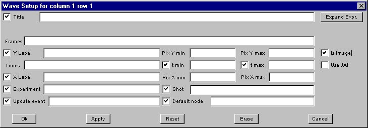
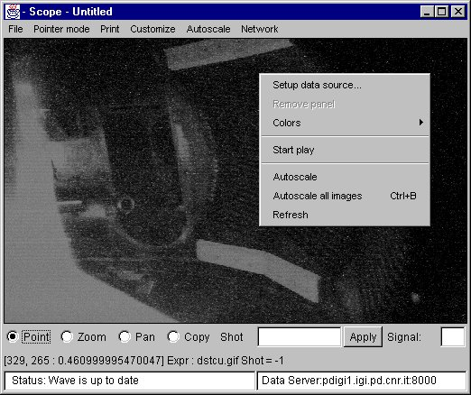

jScope 
jScope is a Java tool for the display of waveforms. Its concepts derive from the MDSPlus Scope, the MDSplus tool for data visualization. jScope adds new features, such as color support and error bars.
With jScope it is possible to define a set of panels and a set of waveforms is associated with each panel. Once the Waveform(s) have been displayed, it is possible to zoom parts of them, to move a cursor in order to get exact coordinates, and to drag waveforms.Following is a brief summary of the options currently available in jScope:
Main Menu bar:
- File:
- New Window: creates a new jScope windows
- Close: closes the current window
- Exit: quit the application
- Pointer mode: defines the current mouse behaviour, which can be set as follows:
- Point: in this configuration, a crosshair is present on each panel, and can be moved over the waveform. The corresponding point coordinates are displayed on a bottom line, and crosshairs on the other panels are moved accordingly to the time coordinates of the selected crosshair. When more tha one waveform is displayed on the same panel, clicking the mouse near one waveform, locks the crosshair to the selected waveform (as indicated also by the colour of the crosshair). The bottom line indicates which waveform is currently selected. Clicking MB2 mouse button when in point mode sets all the scales of the waveforms (both X and Y) to the scale of the selected panel.
- Zoom: when in Zoom mode it is possible to drag the mouse in order to define a zoom region. Clicking MB1 mouse button when in Zoom mode also enlarges the waveform, centered around the current mouse position.
- Pan: when in Pan mode, it is possible to drag the waveform(s) of the selected panel.
- Copy: in Copy mode, it is possible to select one panel (clicking MB1 mouse button) and copy its contents in the other panels (clicking MB2 mouse button). Deselection is made by clicking MB2 mouse button in the selected panel. Pointer modes are also selectable using the bottom radio boxes.
- Print:
- Print All: prints all the waveforms.
- Customize:
- Global Setting: defines a subset of the waveform settings which is valid for all waveforms (see description of waveform settings below). It defines also grid configuration, such as the number the number of vertical and horizontal grids. A toggle button will also define black or white background.
- Window: defines the number of panels. Panels can then be re-dimensioned by dragging the small handles between panels.
- Printer: to be used for printer selection. It appears only using JDK 1.2.
- Page setup: It appears only using JDK 1.2, to be used for page orientation and print margins.
- Font Selection: defines the font to be used for labels and numbers in jScope
- Color list: defines the color palette, which is then used to assign colors to waveforms.
- Public variables: defines the context for data access (see customization section for using this feature in non MDSPlus systems)
- Brief error: defines complete or reduced error reporting (MDSPlus version only).
- Use last Saved Setting, Use Saved Setting from... : retrieve the a saved jScope configuration. jScope configurations can be saved in files, and reloaded at any time. The name of a configuration file can be defined as a command argument. e.g. java jScope <configuration filename>.
- Save current setting, Save current setting as: save current configuration in a file.
- Autoscale: used to redisplay full waveforms (e.g. after zooming or dragging) it is a subset of a popup menu described below.
- All: autoscale all signals
- All y: autoscale only y values.
- Network: defines current connection to data.
- Fast network access: enables data reduction over the network (MDSplus version only)
- Servers: defines data source. A server can be local or remote. In the latter case it is defined by its IP address. The current server can be defined at the command line as follows: java -Ddata.address=<IP address> jScope. The current server is displayed in the bottom line on the right.
- Edit server list: allows to add new servers on the server list.
Popup Menu
A popup menu is displayed clicking MB3 mouse button on a panel (except in Copy mode) as follows:
The first item of this menu defines the contents of the selected panel and activates a setup form. The form is as follows

and defines the following fields:
It is possible to define a set of signals using the form: after filling the fields and pressing <return>, the signal is added to the list. Definitions can be modified by selecting the signal on the list. To add a new signal to the list, select the first item; to remove a signal from the list, select it and press <del>.
- Title: the title of the panel (optional)
- Signal Label: the string to appear in the legend associated with the signal. If no label is defined, the definition of the Y axis of the signal is displayed.
- Y: the y axis of the signal
- Y label: the label associated with y axis (optional)
- X: the x axis of the signal (optional, see below how jScope handles the case in which no x axis is specified)
- X label: the label associated with x axis (optional)
- Xmin, Xmax, Ymin, Ymax: maximum and minimum values for x and y axis (optional)
- Experiment: the name of the experiment (pulse file)
- Shot: the shot number
- Update event: the name of the event which generates an automaic update (MDSPlus version only)
- Default node: the default node in expression evaluation (MDSPlus version only)
Clicking the expand expr button, a popup window is displayed, which allows easier typing of long specifications of the X and Y axis. It is possible then to define maximum and minimum errors for displaying error bars, by clicking button error.... Most fields have a toggle button associated with them: when selected, the value of the corresponding field is taken from the global configuration (see before). For the definition of the shot field it is also possible to use the bottom shot field. In this case a set or a range of shots can be defined: a set is specified by the following syntax: [<sho1>, ,shot2>, ...]; a range by: <first_shot>:<last_shot>. Once a signal has been added to the list, the corresponding color and type of marker can be set first selecting the signal and then using the pull-down menus on the right of the form.
When a signal in the signal list is selected in the Setup data source popup form, it is possible to define the associated marker and color, as well to define wether the interpolating line has to be displayed and the marker step, i.e. the number of data points for each visible marker.The second item of the Waveform popup menu allows the selection of the associated waveform (indicated by a red border around the selected waveform). Waveform selection is used as a fast way for defining waveforms: in this case the name of the signal can be typed in the bottom Signal text field and inserted in the selected waveform by pressing <Return>. The name refers only to the Y Value field of the Setup popup form; all the other parameters are taken from the global configuration. Multiple waveforms can be inserted by consecutively typing the waveform name and pressing <Return> in the Signal field. If no wave panel is selected and new signals are entered, a new panel is created for each signal.
The other two items of the Waveform popup menu allow the definition of legend for the signals associated with the waveform. The legen can be activated/deactivated and positioned where needed in the waveform window. The associated labels associated with the signals are displayed in the legend. If no label is associated with a given signal, the Y-value name is displayed istead.
The Signals item of the Waveform popup menu allows a rapid activation/deactivation of the currently defined signals. It is useful when dealing with multiple signals to individually define their visibility in the waveform panel.
The Marker, Marker-step, Colors and Interpolate items of the Waveform popup menu are active only in point mode, i.e. when one signal is selected, and allow a rapid definition of the associated graphical configuration without opening the Setup data source popup form.
The other items of the popup list allow rescalings of waveforms, and their meanings are clear from the associated label.
Finally the last item Save as Text writes the displayed waveforms points in a text file.
jScope and Images
It is now possible with jScope to look at sequences of frames (usually produced by a camera) and to correlate them with other waveforms. Using standard jdk, it is possible to look at gif, jpeg and multiframe gifs developed at CMOD. It is also possible to look at other formats by installing the standard java extension JAI (Java Advanced Imaging).The property file of jScope
A jScope panel can be connected to a sequence of frames by selecting the is_image check box in the data setup dialog. When image mode is selected, the fields of the setu data dialog are changed and looks like the following:

where the fields have the following meaning
and the checkboxes indicate wether the corresponding value is taken from the global setup.
- Title: title written above the image
- Frames: frame sequence name (the following section will explain how names are associated with frame sequences)
- Times: defines the time to be associated with each frame. If timing information is stored into the frame set (such as for CMOD multiframe gifs) , there is no need to fill this field. Otherwise it will refer to a vector of times.
- t min, t.max: defines minimum and maximum time to be considered in the frame sequence. NOTE: this field is very important for very large sequences of frames. jScope in fact discards frames whose time is outside the specified interval, thus freeing memory resources. The default value(as specified by the associated checkboxes) is taken from xmin and xmax fields of the global setting.
- use JAI enables the use of the JAI library. NOTE: avoid using JAI support for formats already supported by jdk because JAI libraries use more memory.
- Y label: the label associated with y axis (optional)
- X label: the label associated with x axis (optional)
- Pix Xmin, Pix Xmax, Pix Ymin, Pix Ymax: maximum and minimum values for the region of interest in the image(in pixel)
- Experiment: the name of the experiment (pulse file)
- Shot: the shot number
- Update event: the name of the event which generates an automaic update (MDSPlus version only)
- Default node: the default node in expression evaluation (MDSPlus version only)
Once the frame sequence has been loaded, the first frame of the sequence is displayed. When in zoom mode, it is possible to enlarge portions of the image. When in point mode, the frame sequence is synchronized with the other displayed waveforms. This means that moving the cursor over a waveform will also update the displayed frame accordingly. When in point mode, <ctrl>MB1 click will proceede one frame further (moving in correspondence the cursor over the other waveforms). Conversely, <shift>MB1 click will go back one frame.
When a panel is displaying a frame sequence, the popup menu will look as follows:
where some frame-specific menu items are defined as follows(the others have the same meaning as when looking at waveforms):
- Start play: start frame animation. When in zoom mode, the cursor is moved over the other waveforms, and animation is performed in step for the other frame panels. During animation the item is chenged to stop play for stopping the animation.
- Autoscale: used to come back to the original frame width after zooming.
- Autoscale all images: the same as above, performed on all the frame panels.
How to integrate frame sequences in jScope using MDSplusWhen using a MDSplus data server (mdsip) for getting data in jScope, the following TDI functions must be provided for displaying frame sequences, and will be invoked by jScope in the given sequence:
- JavaGetAllFrames(in _experiment, in_frame_name, in_shot) : this TDI function receive the experiment (string), the shot (int) and the frame sequence name(string) as defined in the popup dialog. This fun will return 0 if frames are stored in separate items, thus making jScope separately request each frame of the request. Currently this fun will return a non zero value only for multiframe gif format implemented at CMOD. In this case, the content of the file is returned in the form of a byte array as it stands (it will be decoded by jScope) and the following funs are not called.
- JavaGetFrameTimes(in _experiment, in _frame_name, in _shot): this TDI function receives the same parameters of the above function, and will return an array of times, specifying the ime associated with each frame.
- JavaGetFrameAt(in _experiment, in _frame_name, in _shot, in _frame_idx): this TDI function receives in addition the index of the required frame in the frame sequence. It will be called by jScope as many times as the dimension of the time vector returned by JavaGetFrameTimes, and will provide the selected image (frame) as it stands in the form of a byte array.
When started, jScope looks for the jScope.properties file. This file allows user configuration of jScope and may look as follows:
jScope.directory=E:\\
jScope.default_server=Demo server
jScope.data_server_1=Jet data
jScope.data_server_2=Ftu data:192.107.51.30
jScope.data_server_3=150.178.3.47
jScope.data_server_4=150.178.3.80
jScope.data_server_5=150.178.3.80:8000
jScope.data_server_6=pdigi1.igi.pd.cnr.it:8000
jScope.reversed=false
jScope.grid_mode=Dotted
jScope.x_grid=5
jScope.y_grid=5
jScope.item_color_0=Blak,java.awt.Color[r=0,g=0,b=0]
jScope.item_color_1=Blue,java.awt.Color[r=0,g=0,b=255]
jScope.item_color_2=Cyan,java.awt.Color[r=0,g=255,b=255]
jScope.item_color_3=DarkGray,java.awt.Color[r=64,g=64,b=64]
jScope.item_color_4=Gray,java.awt.Color[r=128,g=128,b=128]
jScope.item_color_5=Green,java.awt.Color[r=0,g=255,b=0]
jScope.item_color_6=LightGray,java.awt.Color[r=192,g=192,b=192]
jScope.item_color_7=Magenta,java.awt.Color[r=255,g=0,b=255]
jScope.item_color_8=Orange,java.awt.Color[r=255,g=200,b=0]
jScope.item_color_9=Pink,java.awt.Color[r=255,g=175,b=175]
jScope.item_color_10=Red,java.awt.Color[r=255,g=0,b=0]
jScope.item_color_11=Yellow,java.awt.Color[r=255,g=255,b=0]
- jScope.directory defines the default directory for storing and retrieving configurations.
- jScope.default_server defines the data server at startup.
- jScope.data_server_n defines the data nth data server displayed in the server list.
- jScope.reversed, if true, defines black background.
- jScope.grid_mode defines the grid selection.
- jScope.x_grid defines the tentative number of x labels.
- jScope.y_grid defines the tentative number of y labels.
- jScope.item_color_n defines the nth color in the color palette.
How to customize jScope to a non MDSplus system
Using jScope in another system requires the implementation of two classes LocalProvider, used to access local data, and NetworkProvider, used to access remote data, both implementing the DataProvider interface.
DataProvider defines the following methods, which must be implemented
by both classes:
- public void SetEnvironment(String s) defines the environment for data retirieval: the argument is a String which defines <name value> pairs, which is defined by the customize-global variables menu bar item. In MDSplus, for example, it is used to set global variables which can then be used in expression evaluation, i.e. when retrieving signals. If the system does not support anything similar, the simply returns.
- public void Update(String experiment, int shot) called before each signal readout to define the current experiment and shot.
- public String GetString(String in): called when a string (i.e. a title of a panel, or a X/Y label) needs to be evalueted. If no evaluation is required, simply return the argument.
- public float GetFloat(String in): called when a single floating point value is required. It is used to evaluate X/Y min/max values when defined in the setup form. If no particular evaluation is required, simply return new Float(in).floatValue().
- public float[] GetFloatArray(String in): called each time a signal must be read. The argument is the specification given in Y field of the setup form. Its interpretation is left to this method.
- public int[] GetIntArray(String in): called to evaluate shot number(s). The argument to be evaluated is the content of the bottom shot field, possibly defining an array of shot numbers.
- public String GetXSpecification(String in): called when data must be retrieved, but no specification of the X axis is given. Most systems, in fact provide some method for evaluating x axis, based on the specification of the signal. The returned string is then passed to GetFloatArray to retrieve x values.
- public String ErrorString(): if GetFloatArray returns null, jScope assumes that an error occurred in data retrievel, and calls ErrorString to get the description of the error, in order to display it on a popup window.
- public String GetDefaultTitle(String in_y[])
- public String GetDefaultXLabel(String in_y[])
- public String GetDefaultYLabel(String in_y[]) :these methods are called when fields title, x label and y label, repectively, are left empty. The argument is the content of the y value field. If no default label is defined, these methods return null.
- public byte[] GetAllFrames(String frame_name) called first when a frame sequence is requested. Returns null if frames are stored individually. Currently only CMOD multiframe gifs are supported.
- public float[]GetFrameTimes(String frame_name) return the array of times associated with the specified frame sequence.
- public byte[] GetFrameAt(String frame_name, int idx) return the frame at index idx. The content of the file is passed as a byre array.
The following methods refer to more specialized tasks, currently
supported by MDSplus. Implement them as follows:
public boolean SupportsAsynch() { return false; }
public void addMdsEventListener(MdsEventListener l, String event){}
public void removeMdsEventListener(MdsEventListener l, String event){}
Besides implementing the DataProvider interfaces, class LocalProvider
must provide a constructor with no arguments, (and will likely define a
set of native methods, linking against the data access libraries), while
class NetworkProvider must provide a constructor with one String
argument, i.e. the IP address of the associated server. Class NetworkProvider
will handle the required protocol with the remote data server.
For further information, contact me at the following e-mail address:
manduchi@igi.pd.cnr.it